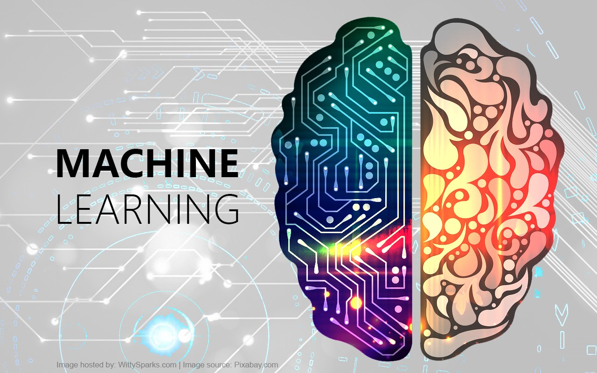

L'intelligenza artificiale (IA) è una tecnologia che permette ai computer di svolgere compiti che richiedono intelligenza umana.
Questi compiti includono il riconoscimento vocale, la comprensione del linguaggio naturale, il riconoscimento di immagini e la capacità di prendere decisioni.
Come Influisce l'Intelligenza Artificale Nel Quotidiano?
L’intelligenza artificiale (IA) è ormai parte integrante della nostra vita quotidiana, anche se spesso non ce ne rendiamo conto. Grazie a questa tecnologia, molti strumenti che usiamo ogni giorno sono diventati più intelligenti, veloci ed efficienti.
Un esempio concreto sono gli assistenti vocali come Siri, Alexa o Google Assistant, che ci aiutano a cercare informazioni, gestire la casa o inviare messaggi solo con la voce. Anche i social media utilizzano l’IA per suggerirci contenuti che ci interessano, rendendo l’esperienza più personalizzata. Nelle app di navigazione, come Google Maps, l’intelligenza artificiale analizza il traffico in tempo reale e suggerisce i percorsi più rapidi.
L’IA è presente anche nello shopping online, dove ci consiglia prodotti in base ai nostri gusti, o nelle piattaforme di streaming, che ci propongono film e serie su misura. Perfino nella sanità, l’intelligenza artificiale aiuta i medici a fare diagnosi più rapide e accurate.

Machine Learning
Che cos'è?
Il Machine Learning è una tecnologia che permette ai computer di imparare dai dati ed effettuare previsioni o decisioni senza essere programmati esplicitamente. In pratica, i sistemi analizzano esempi passati per riconoscere schemi e comportamenti utili in situazioni nuove.
A cosa serve?
Il Machine Learning serve per automatizzare compiti complessi, come riconoscere immagini, prevedere tendenze, classificare testi o personalizzare raccomandazioni, aiutando a prendere decisioni più rapide e intelligenti basate sui dati.